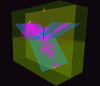
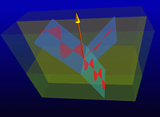
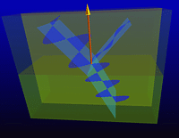
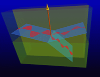
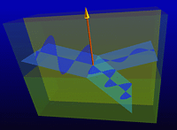
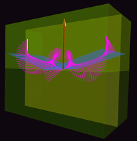

Still pictures from the Reflection/Refraction TOP module
Note: Click on the thumbnails to see the full-sized images.
External Reflection (Air-to-Glass)
 Circularly polarized light incident at Brewster's angle. |
 Unpolarized light incident at Brewster's angle. |
|
 Linearly polarized light polarized perpendicular to the plane of incidence, angle of incidence of 35 degrees. Note the pi phase change upon reflection. |
 Linearly polarized light polarized parallel to the plane of incidence, angle of incidence of 35 degrees. Note that there is no phase change upon reflection. |
|
 Linearly polarized light polarized perpendicular to the plane of incidence, angle of incidence of 70 degrees. Note the pi phase change upon reflection. |
 Linearly polarized light polarized parallel to the plane of incidence, angle of incidence of 70 degrees. Note that there is a pi phase change upon reflection. |
{kind=link}
{kind=link}
{kind=link}
{kind=link}
{kind=link}
Internal Reflection (Glass-to-Air)

Circularly polarized light incident at an angle greater than the critical angle.
The evanescent waves in the air are not being pictured.

Created by Srihari Angaluri and Kiril N Vidimce
Send comments to comments@webtop.org